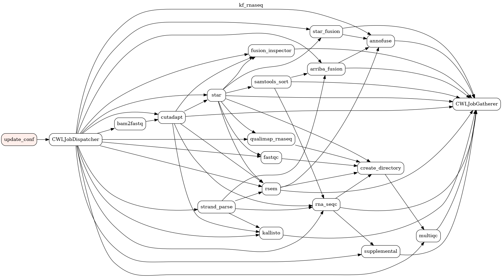
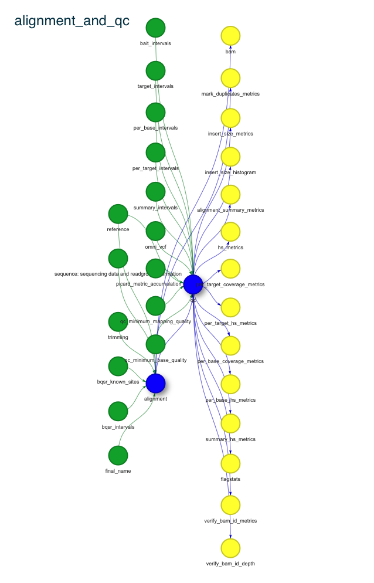
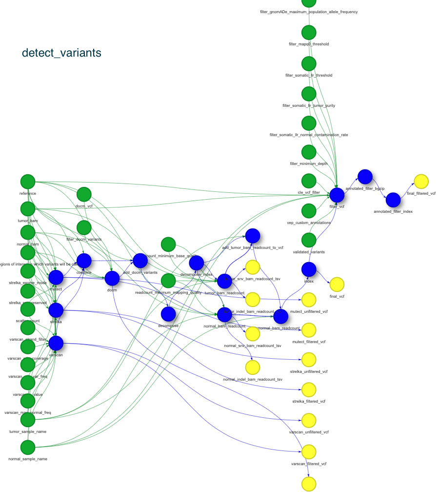

Pipelines overview¶
germline-exome¶

Description¶
Introduction¶
Germline exome workflow based on mgi-germline-exome.
This worfklow completes exome alignment and germline variant detection using a variety of tools. The initial processing of sequence is performed by picard, alignment is performed by bwa. Output bam file undergoes qc process resulting in insert_size_metrics, alignment_summary_metrics, hs_metrics and flagstat. VerifyBamId step checks if reads are not contaminated as a mixture of two samples. Variants are detected using GATK HaplotypeCaller tool.
Alignment and QC step¶
Germline pipeline starts with either fastq files or unaligned BAM files with necessary metadata describing analysis type, sample name and phenotype.

Used tools:
bwa_mem 0.7.15 - for sequence alignment step using GRCh38 reference
samblaster 0.1.24 - for adding mate tags
flexbar 3.5 - for bar and adapter removal
picard:2.23.6 for alignment metrics
samtools 1.11–h6270b1f_0 for BAM indexing and flagstat operation
picard 2.18.1 - for bedtointervals operation
gatk 4.1.8.1 for Select Variants
verifyBamId v1.1.3 - for checking whether the reads are contaminated as a mixture of two samples
fastqc - for bam QC report
qualimap - for bam QC report
Detect variants step¶

Used tools:
gatk:4.1.8.1 Haplotype Caller for variant (SNPs and indels) detection
bcftools - QC for detected variants
Variants post-processing¶
After variants are detected by Haplotype Caller they are subject decomposition and normalization to assure coherent variant representation. Once variants are standardized they are anootated with metadata collected and publishe by public databases.
Used tools:
vt 0.57721–hf74b74d_1 - for normalization and decomposition
vep - for variants annotations
Loading variants to database¶
After succesfull completion of variants annotations data are transformed into tabular form and stored in relational database using custom operations.
Input parameters¶
sample_input.json
{
"design": "test_design",
"fastq1_path": "cwl_inputs_folder/germline-exome_tests/RG-corriell_S7_L001_R1_001.fastq.gz",
"fastq2_path": "cwl_inputs_folder/germline-exome_tests/RG-corriell_S7_L001_R2_001.fastq.gz",
"flowcell_id": "JHDAXCKJDLSK",
"gender": "M",
"is_test": "_tests",
"patient_id": "germline_test_PID",
"phenotype": "proband",
"sample_id": "germline_test_SID",
"template_path": "dags/cwl/configurations/templates/germline_exome_configuration_template.yaml"
}
Sample REST API call¶
curl -v -g -X POST \
http://localhost:8080/api/v1/dags/germline-exome/dagRuns \
-H 'Cache-Control: no-cache' \
-H 'Content-Type: application/json' \
-d "{'conf':\'$(cat sample_input.json | sed 's/\"/\\"/g')\'}"
Sample Airflow cli invocation¶
airflow dags trigger \
-c "$(cat sample_input.json)" \
-r dag_run-1 germline-exome
kf_rnaseq¶
Description¶
DAG = kf_rnaseq
RNA-seq Workflow based on kf-rnaseq-workflow.
Introduction¶
This pipeline utilizes cutadapt to trim adapters from the raw reads, if necessary, and passes the reads to STAR for alignment. The alignment output is used by RSEM for gene expression abundance estimation. Additionally, Kallisto is used for quantification, but uses pseudoalignments to estimate the gene abundance from the raw data. Fusion calling is performed using Arriba and STAR-Fusion detection tools on the STAR alignment outputs. Filtering and prioritization of fusion calls is done by annoFuse. Metrics for the workflow are generated by RNA-SeQC.
Cutadapt¶
Cutadapt v2.5 Cut adapter sequences from raw reads if needed.
STAR¶
STAR v2.6.1d RNA-Seq raw data alignment.
RSEM¶
RSEM v1.3.1 Calculation of gene expression.
Kallisto¶
Kallisto v0.43.1 Raw data pseudoalignment to estimate gene abundance.
STAR-Fusion¶
STAR-Fusion v1.5.0 Fusion detection for STAR chimeric reads.
Arriba¶
Arriba v1.1.0 Fusion caller that uses STAR aligned reads and chimeric reads output.
annoFuse¶
annoFuse 0.90.0 Filter and prioritize fusion calls. For more information, please see the following paper.
RNA-SeQC¶
RNA-SeQC v2.3.4 Generate metrics such as gene and transcript counts, sense/antisene mapping, mapping rates, etc
Usage¶
Inputs common:¶
inputs:
sample_name: string
r1_adapter: ['null', string]
r2_adapter: ['null', string]
STAR_outSAMattrRGline: string
STARgenome: File
RSEMgenome: File
reference_fasta: File
gtf_anno: File
FusionGenome: File
runThread: int
RNAseQC_GTF: File
kallisto_idx: File
wf_strand_param: ["default", "rf-stranded", "fr-stranded"], doc: "use 'default' for unstranded/auto, 'rf-stranded' if read1 in the fastq read pairs is reverse complement to the transcript, 'fr-stranded' if read1 same sense as transcript"
input_type: ["BAM", "FASTQ"], doc: "Please select one option for input file type, BAM or FASTQ."
Bam input-specific:¶
inputs:
reads1: File
PE Fastq input-specific:¶
inputs:
reads1: File
reads2: File
SE Fastq input-specific:¶
inputs:
reads1: File
Run:¶
1) Fastq or bam input are accepted:
For PE fastq input, please enter the reads 1 file in reads1 and the reads 2 file in reads2.
For SE fastq input, enter the single ends reads file in reads1 and leave reads2 empty as it is optional.
For bam input, please enter the reads file in reads1 and leave reads2 empty as it is optional.
2) r1_adapter and r2_adapter are OPTIONAL.
If the input reads have already been trimmed, leave these as null and cutadapt step will simple pass on the fastq files to STAR.
If they do need trimming, supply the adapters and the cutadapt step will trim, and pass trimmed fastqs along.
wf_strand_paramis a workflow convenience param so that, if you input the following, the equivalent will propagate to the four tools that use that parameter:
- `default`: 'rsem_std': null, 'kallisto_std': null, 'rnaseqc_std': null, 'arriba_std': null. This means unstranded or auto in the case of arriba.
- `rf-stranded`: 'rsem_std': 0, 'kallisto_std': 'rf-stranded', 'rnaseqc_std': 'rf', 'arriba_std': 'reverse'. This means if read1 in the input fastq/bam is reverse complement to the transcript that it maps to.
- `fr-stranded`: 'rsem_std': 1, 'kallisto_std': 'fr-stranded', 'rnaseqc_std': 'fr', 'arriba_std': 'yes'. This means if read1 in the input fastq/bam is the same sense (maps 5' to 3') to the transcript that it maps to.
Suggested
STAR_outSAMattrRGline, with TABS SEPARATING THE TAGS, format is:
`ID:sample_name LB:aliquot_id PL:platform SM:BSID` for example `ID:7316-242 LB:750189 PL:ILLUMINA SM:BS_W72364MN`
Suggested inputs are:
- `FusionGenome`: [GRCh38_v27_CTAT_lib_Feb092018.plug-n-play.tar.gz](https://data.broadinstitute.org/Trinity/CTAT_RESOURCE_LIB/__genome_libs_StarFv1.3/GRCh38_v27_CTAT_lib_Feb092018.plug-n-play.tar.gz)
- `gtf_anno`: gencode.v27.primary_assembly.annotation.gtf, location: ftp://ftp.ebi.ac.uk/pub/databases/gencode/Gencode_human/release_27/gencode.v27.primary_assembly.annotation.gtf.gz, will need to unzip
- `RNAseQC_GTF`: gencode.v27.primary_assembly.RNAseQC.gtf, built using `gtf_anno` and following build instructions [here](https://github.com/broadinstitute/rnaseqc#usage)
- `RSEMgenome`: RSEM_GENCODE27.tar.gz, built using the `reference_fasta` and `gtf_anno`, following `GENCODE` instructions from [here](https://deweylab.github.io/RSEM/README.html), then creating a tar ball of the results.
- `STARgenome`: STAR_GENCODE27.tar.gz, created using the star_genomegenerate.cwl tool, using the `reference_fasta`, `gtf_anno`, and setting `sjdbOverhang` to 100
- `reference_fasta`: [GRCh38.primary_assembly.genome.fa](ftp://ftp.ebi.ac.uk/pub/databases/gencode/Gencode_human/release_27/GRCh38.primary_assembly.genome.fa.gz), will need to unzip
- `kallisto_idx`: gencode.v27.kallisto.index, built from gencode 27 trascript fasta: ftp://ftp.ebi.ac.uk/pub/databases/gencode/Gencode_human/release_27/gencode.v27.transcripts.fa.gz, following instructions from [here](https://pachterlab.github.io/kallisto/manual)
Outputs:¶
outputs:
cutadapt_stats: File, outputSource: cutadapt/cutadapt_stats # only if adapter supplied
STAR_transcriptome_bam: File, outputSource: star/transcriptome_bam_out
STAR_sorted_genomic_bam: File, outputSource: samtools_sort/sorted_bam
STAR_sorted_genomic_bai: File, outputSource: samtools_sort/sorted_bai
STAR_chimeric_bam_out: File, outputSource: samtools_sort/chimeric_bam_out
STAR_chimeric_junctions: File, outputSource: star_fusion/chimeric_junction_compressed
STAR_gene_count: File, outputSource: star/gene_counts
STAR_junctions_out: File, outputSource: star/junctions_out
STAR_final_log: File, outputSource: star/log_final_out
STAR-Fusion_results: File, outputSource: star_fusion/abridged_coding
arriba_fusion_results: File, outputSource: arriba_fusion/arriba_fusions
arriba_fusion_viz: File, outputSource: arriba_fusion/arriba_pdf
RSEM_isoform: File, outputSource: rsem/isoform_out
RSEM_gene: File, outputSource: rsem/gene_out
RNASeQC_Metrics: File, outputSource: rna_seqc/Metrics
RNASeQC_counts: File, outputSource: supplemental/RNASeQC_counts # contains gene tpm, gene read, and exon counts
kallisto_Abundance: File, outputSource: kallisto/abundance_out
annofuse_filtered_fusions_tsv: 'File?', outputSource: annoFuse_filter/filtered_fusions_tsv, doc: "Filtered output of formatted and annotated Star Fusion and arriba results"

Introduction¶
In this workflow, annoFuse performs standardization of StarFusion and arriba output files to retain information regarding fused genes, breakpoints, reading frame information as well as annotation from FusionAnnotator, output format description here. Basic artifact filtering to remove fusions among gene paralogs, conjoined genes and fused genes found in normal samples is also performed by filtering fusions annotated by FusionAnnotator with “GTEx_Recurrent|DGD_PARALOGS|Normal|BodyMap|ConjoinG”. Each fusion call needs at least one junction reads support to be retained as true call. Additionally, if a fusion call has large number of spanning fragment reads compared to junction reads (spanning fragment minus junction read greater than ten), we remove these calls as potential false positives. An expression based filter is also applied, requiring a min FPKM value of 1 for the fusion genes in question.
Please refer to annoFuse R package for additional applications like putative oncogene annotations.
Usage¶
Inputs¶
inputs:
sample_name: 'string', doc: "Sample name used for file base name of all outputs"
FusionGenome: 'File', doc: "GRCh38_v27_CTAT_lib_Feb092018.plug-n-play.tar.gz", sbg:suggestedValue: 'File', path: '5d9c8d04e4b0950cce147f94', name: 'GRCh38_v27_CTAT_lib_Feb092018.plug-n-play.tar.gz'
genome_untar_path: 'string?', doc: "This is what the path will be when genome_tar is unpackaged", default: "GRCh38_v27_CTAT_lib_Feb092018/ctat_genome_lib_build_dir"
rsem_expr_file: 'File', doc: "gzipped rsem gene expression file"
arriba_output_file: 'File', doc: "Output from arriba, usually extension arriba.fusions.tsv"
col_num: 'int?', doc: "column number in file of fusion name."
star_fusion_output_file: 'File', doc: "Output from arriba, usually extension STAR.fusion_predictions.abridged.coding_effect.tsv"
output_basename: 'string', doc: "String to use as basename for outputs"
Run¶
Outputs from the arriba and STAR Fusion runs are required ahead of time (main RNAseq worflow output)
Gzipped rsem counts file, also generated in main RNAseq workflow
FusionGenomeshould match what was used to run STAR Fusion
Outputs¶
outputs:
annofuse_filtered_fusions_tsv: File, outputSource: annoFuse_filter/filtered_fusions_tsv, doc: "Filtred output of formatted and annotated Star Fusion and arriba results"
Input parameters¶
sample_input.json
{
"gender": "M",
"flowcell_id": "JFHSKJHKJAH",
"fastq1_path": "cwl_inputs_folder/kf_rnaseq_tests/SRR064286_sorted_chr20_45_50_sort.bam_R1.fastq.gz",
"fastq2_path": "cwl_inputs_folder/kf_rnaseq_tests/SRR064286_sorted_chr20_45_50_sort.bam_R2.fastq.gz",
"fusions_list": "fusions.listA.txt",
"is_test": "_tests",
"patient_id": "rnaseq_test_PID",
"phenotype": "proband",
"sample_id": "rnaseq_test_SID",
"template_path": "dags/cwl_kf_rnaseq/configurations/templates/kf_rnaseq_configuration_template.yaml"
}
Sample REST API call¶
curl -v -g -X POST \
http://localhost:8080/api/v1/dags/kf_rnaseq/dagRuns \
-H 'Cache-Control: no-cache' \
-H 'Content-Type: application/json' \
-d "{'conf':\'$(cat sample_input.json | sed 's/\"/\\"/g')\'}"
Sample Airflow cli invocation¶
airflow dags trigger \
-c "$(cat sample_input.json)" \
-r dag_run-1 kf_rnaseq
somatic-exome¶
Description¶
Somatic exome workflow based on mgi-somatic-exome.
Introduction¶
Somatic_exome is designed to perform processing of mutant/wildtype H.sapiens exome sequencing data. It features BQSR corrected alignments, 4 caller variant detection, and vep style annotations. Structural variants are detected via manta and cnvkit. In addition QC metrics are run, including somalier concordance metrics.
Alignment and QC step¶
Pipeline starts with either fastq files or unaligned BAM files with necessary metadata describing analysis type, sample name, gender, distinction between tumor and normal.
This step is performed seperately for normal and tumor sample.
Used tools:
bwa_mem 0.7.15 - for sequence alignment step using GRCh38 reference
samblaster 0.1.24 - for adding mate tags
flexbar 3.5 - for bar and adapter removal
picard:2.23.6 for alignment metrics
samtools 1.11–h6270b1f_0 for BAM indexing and flagstat operation
picard 2.18.1 - for bedtointervals operation
gatk 4.1.8.1 for Select Variants
verifyBamId v1.1.3 - for checking whether the reads are contaminated as a mixture of two samples
fastqc - for bam QC report
qualimap - for bam QC report
multiqc - QC
Detect variants step¶
This step is performed for normal and tumor sample at once.
Used tools:
mutect 2 - for somatic variants detection
strelka 2.9.9 - for somatic variants (SNPs and indels) detection
varscan 2.4.2 - for somatic variants detection
manta 1.6.0 - for somatic structural variants detection
cnvkit 0.9.8 - for copy number variants detection
vt 0.57721–hf74b74d_1 - for normalization and decomposition
bcftools 1.12 - for vcf manipulations (merging, renaming samples)
samtools 1.11 - for indexing and sanitizing BAM files (removing mutect-specific format tags, removing non ACTGN bases)
gatk 4.1.8.1 - for DOCM variants detection and selecting, filtering variants
bcftools - QC for detected variants
Input parameters¶
sample_input.json
{
"design": "SSV6",
"flowcell_id": "JHDAXCKJDLSK",
"gender": "M",
"is_test": "_tests",
"normal_fastq1_path": "cwl_inputs_folder/somatic-exome_tests/SRR7890845_chr17_test1_R1.fastq.gz",
"normal_fastq2_path": "cwl_inputs_folder/somatic-exome_tests/SRR7890845_chr17_test1_R2.fastq.gz",
"normal_sample_id": "normal_test_SID",
"patient_id": "somatic_test_PID",
"phenotype": "proband",
"template_path": "dags/cwl/configurations/templates/somatic_exome_template.yaml",
"tumor_fastq1_path": "cwl_inputs_folder/somatic-exome_tests/SRR7890844_chr17_test1_R1.fastq.gz",
"tumor_fastq2_path": "cwl_inputs_folder/somatic-exome_tests/SRR7890844_chr17_test1_R2.fastq.gz",
"tumor_sample_id": "tumor_test_SID"
}
Sample REST API call¶
curl -v -g -X POST \
http://localhost:8080/api/v1/dags/somatic-exome/dagRuns \
-H 'Cache-Control: no-cache' \
-H 'Content-Type: application/json' \
-d "{'conf':\'$(cat sample_input.json | sed 's/\"/\\"/g')\'}"
Sample Airflow cli invocation¶
airflow dags trigger \
-c "$(cat sample_input.json)" \
-r dag_run-1 somatic-exome
test_loading_variants¶

Description¶
Input parameters¶
sample_input.json
Sample REST API call¶
curl -v -g -X POST \
http://localhost:8080/api/v1/dags/test_loading_variants/dagRuns \
-H 'Cache-Control: no-cache' \
-H 'Content-Type: application/json' \
-d "{'conf':\'$(cat sample_input.json | sed 's/\"/\\"/g')\'}"
Sample Airflow cli invocation¶
airflow dags trigger \
-c "$(cat sample_input.json)" \
-r dag_run-1 test_loading_variants